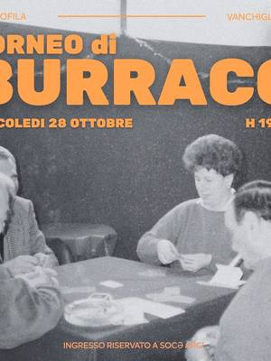
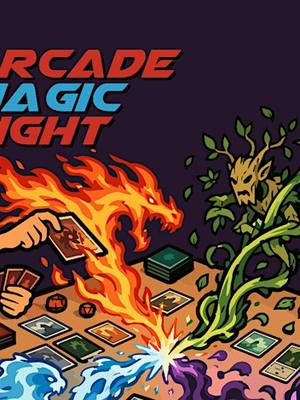
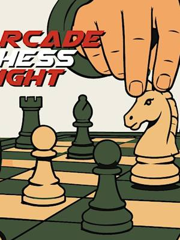
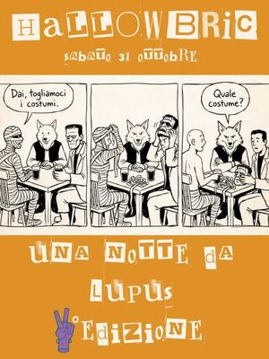

Game tournaments and nights in Turin
Card and chess tournaments, board game nights, role-playing games and treasure hunts in Turin and around.
Search all workshops9 activities coming up · updated on 27 October 2026

wed28octGamesBurraco tournament: a pairs challengeWednesday 28 October, 19:00Vanchiglietta (TO)with Bocciofila Vanchiglietta
wed28octGamesMagic Night: Commander tournamentWednesday 28 October, 20:30–23:30Lingotto (TO) · Freewith Arcade- thu29octGamesChess in the Garden: games outdoorsThursday 29 October, 17:00San Salvario (TO)with Alfiere Campoverde at Casa del Quartiere di San Salvario

thu29octGamesChess Night: Swiss-system tournamentThursday 29 October, 19:30–23:00Lingotto (TO) · Freewith Arcade
sat31octGamesHallowbric: a night of Lupus in TabulaSaturday 31 OctoberPeveragno (CN) · 3 €with Bric a Brac sat31octGamesGhost Exploration: treasure huntSaturday 31 October, 18:00–22:00Aurora (TO) · from 29 €with Minime Differenze
sat31octGamesGhost Exploration: treasure huntSaturday 31 October, 18:00–22:00Aurora (TO) · from 29 €with Minime Differenze sat7novGamesHacking Monopoly: the city at stakeSaturday 7 November, 10:30–13:00San Salvario (TO) · Freewith Urban Desires 2026 with Collettivo Zeroscena
sat7novGamesHacking Monopoly: the city at stakeSaturday 7 November, 10:30–13:00San Salvario (TO) · Freewith Urban Desires 2026 with Collettivo Zeroscena fri13novGamesMurder mystery dinner: a Halloween caseFriday 13 November, 20:00–23:30Lingotto (TO) · 20 €with Arcade
fri13novGamesMurder mystery dinner: a Halloween caseFriday 13 November, 20:00–23:30Lingotto (TO) · 20 €with Arcade- dateto be confirmedOtherCascina Roccafranca: this season’s coursesDate to be confirmedMirafiori (TO)with Cascina Roccafranca